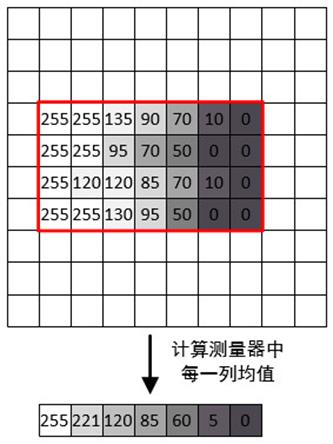

|
类型 |
区域测量 |
|
描述 |
测量区域的灰度分布，沿width方向或沿切向角度正方向，环形沿指定方向，测量区域的外接矩不能超出被测图像边界外  |
|
语法 |
ZV_MrProjection(mr,img,matProj)
参数： mr：ZVOBJECT类型，单测量区域 img：ZVOBJECT类型，被测量图像，单通道图像 matProj：ZVOBJECT类型，图像测量区域的灰度分布，矩阵类型 |
|
适用控制器 |
支持ZV功能或者5系列以上的控制器 |
|
例子 |
ZVOBJECT img,mr,result ZV_ImgRead(img,"0.bmp",0) '以原图像格式读取图片 ZV_MrGenRect(mr,10,142,637,262) '生成矩形测量器 ZV_MrProjection(mr,img,result)'测量区域的灰度投影 |